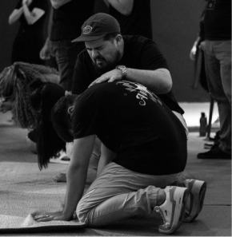

Mount Church
Venha viver a fé conosco. Cultos: Quinta-feira às 20h, Domingo às 18hUma comunidade guiada pelo amor de Deus, dedicada a mudar o mundo através da fé e do serviço
Acreditamos que cada pessoa foi criada para pertencer a uma comunidade,
pois nunca foi o desejo de Deus que vivêssemos esta vida sozinhos.
Somos uma congregação de adoradores de Jesus Cristo em Joinville, Santa Catarina, que anseiam
ver corações transformados e vidas renovadas pelo poder de Deus. Estamos empenhados em
experimentar e promover um avivamento que impacte não apenas nossa cidade, mas também o mundo
inteiro.
